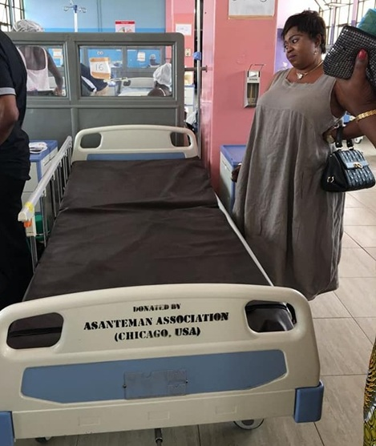

March 2008 · MedicalKomfo Anokye Teaching Hospital, Kumasi
In March 2008, AACM partnered with Mr. Francis Antwi-Barfi and his family of Maywood, Illinois, as well as the Otumfuo Educational Fund (Ghana) to support the shipment of a 40-foot shipping container of hospital equipment and medical supplies to Komfo Anokye Teaching Hospital (KATH) in Kumasi, Ghana — one of the country’s premier teaching hospitals. AACM contributed $1,500 toward international freight costs, helping make the delivery possible.
The container included vital, life-saving equipment designed to support kidney disease treatment and general medical care:
The medical donations were generously provided by the Sinai Health System, Chicago, Illinois. The initiative was sparked by the compassion of a philanthropist who mobilized community action after learning of the tragic death of a young kidney patient in Ghana. Her advocacy moved Mr. Antwi-Barfi and his family to lead the grassroots effort to source dialysis machines and other essential hospital equipment for Ghanaian healthcare facilities.